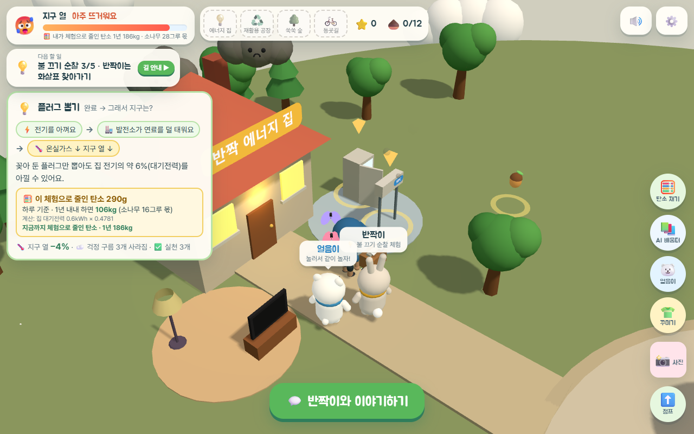
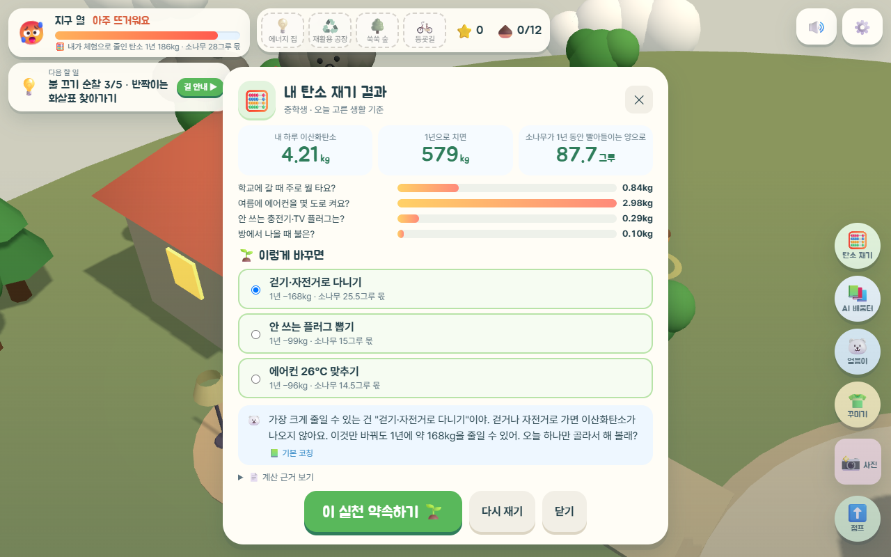
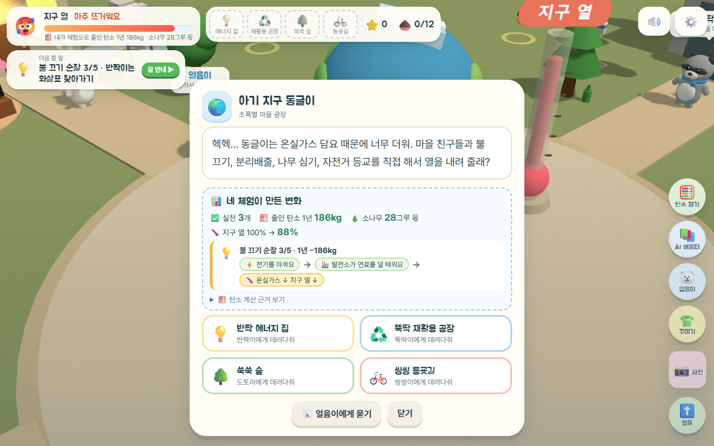
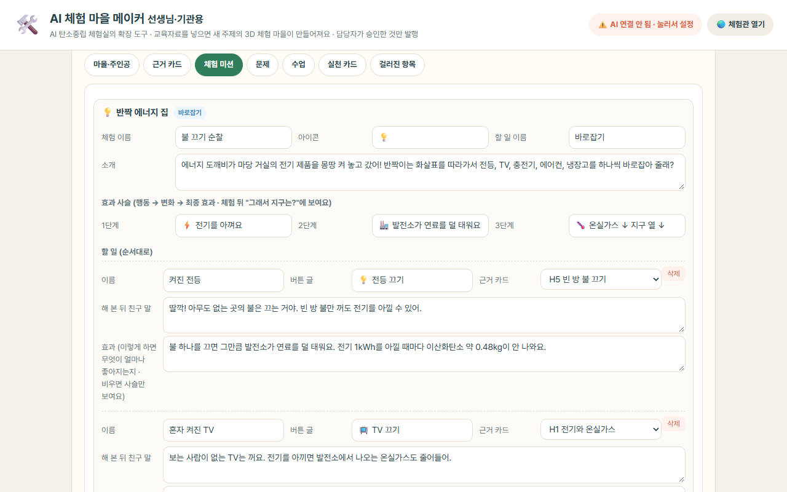

수도권대기환경청 · 신현준 · 2026 공공 AI 대전환 챌린지 세션1 · 3D 체험 + AI 선생님·AI 탄소 코치 + 교육자료로 체험 마을을 만드는 AI 메이커
| 구분 | 내용 |
|---|---|
| 실행 환경 |
|
| 설치·실행 절차 |
|
| LLM 연결 설정 |
|
| 모의데이터 안내 |
|
| 기능 사용 순서 |
흐름 1. 직접 체험하고 "내가 줄인 탄소" 보기 (학생)
흐름 2. 내 탄소 재기 + AI 탄소 코치 · AI 선생님 (학생, AI 연결 시)
흐름 3. 교육자료로 새 체험 마을 만들기 (선생님·기관, AI 핵심 기능)
    |
|---|---|
| 알려진 제약 사항 |
|
탄소중립은 학교와 기관이 꾸준히 교육하지만, 대부분 책자·PDF·강의 형태라 학생이 "내 행동이 지구를 얼마나 바꾸는지"를 체감하기 어렵습니다. 고등학생도 자신이 하루에 이산화탄소를 얼마나 내보내는지, 플러그 하나·에어컨 1℃가 몇 kg인지 잘 모릅니다. 체험형 콘텐츠는 효과가 크지만, 수도권대기환경청의 「푸른하늘 업무체험관」을 직접 만들어 보니 3D 체험 하나를 기획·제작·검수하는 데 오랜 시간이 들었고, 주제가 바뀔 때마다 처음부터 다시 만들어야 했습니다.
① 체험과 숫자를 한 화면에. 3D 마을에서 불 끄기·분리배출·나무 심기·자전거 등교를 직접 하면, 그 행동으로 줄인 탄소를 공식 계수로 바로 계산해 보여 줍니다(예: 플러그 뽑기 하루 290g → 1년 106kg, 소나무 16그루 몫). 학년을 초등 저·고학년, 중학생, 고등학생 4단계로 나눠 같은 체험도 수준에 맞는 원리와 수치로 설명합니다.
② AI는 근거 안에서만, 그리고 검증한 뒤에. AI 선생님은 질문과 가까운 근거 카드만 보고 답하고, AI 탄소 코치는 계산된 숫자만 쓰도록 하여 답의 숫자를 계산 결과와 자동 대조합니다. 개인정보는 AI로 보내기 전에 가리고, 안전·근거·숫자 검사를 통과하지 못한 답은 검수된 기본 설명으로 바꿉니다.
③ 콘텐츠 제작을 AI로 — 메이커. 선생님·기관 담당자가 공개 교육자료를 넣으면 AI가 근거 카드·체험 미션·학년별 문제·수업·실천 카드를 만들고, 원문 구절 대조·교차 검토로 걸러낸 뒤 담당자가 승인한 것만 발행합니다. 같은 3D 틀에 물 절약·미세먼지·산불 예방 등 다른 주제를 얹을 수 있어, 체험 콘텐츠 제작 기간을 줄이고 기관 간에 팩(JSON) 파일로 공유할 수 있습니다.
로그인과 개인정보 수집 없이 링크 하나로 학교·가정에서 바로 쓰고, 진행 기록은 학생 기기에만 남습니다. 연결 모델을 바꿔 끼울 수 있게 만들어 행정안전부 AI 공통기반 모델로 이식할 수 있고, 메이커로 만든 팩은 다른 기관이 그대로 재사용할 수 있습니다. 지원을 받으면 공통기반 연결로 학생용 AI 기능을 상시 운영하고, 교육청·학교별 마을과 익명 실천 통계(약속·실천 새싹 수)로 확대할 계획입니다.
출품 산출물: 공공 GitLab 저장소(소스코드·README·실행 방법), 접속 주소, 공개시연판 링크, 시연영상.